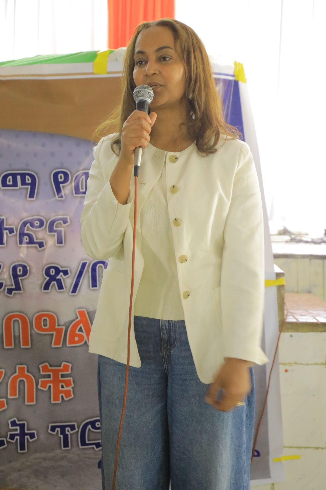
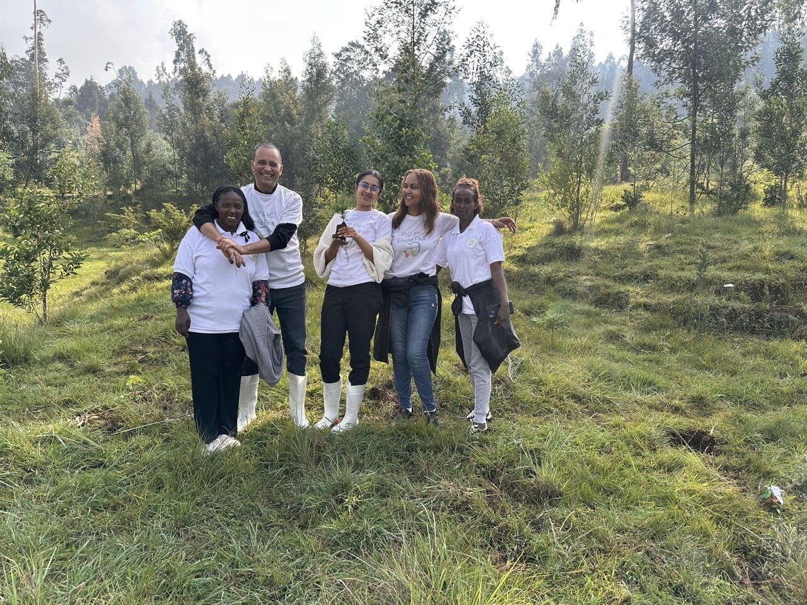
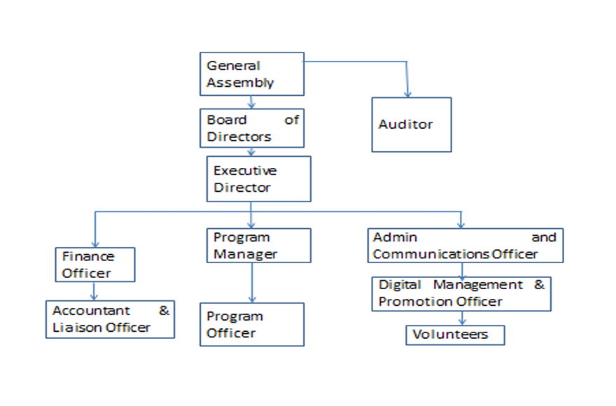

Humanity pursued and poverty alleviated
A world where responsible citizens work together to uphold humanity, reduce poverty, and create equitable opportunity.
Eneho Fikir works alongside children, teachers, youth, women, and families to expand access to education, health, livelihoods, and humanitarian support.
Founded in 2019, Eneho Fikir Humanitarian and Development Organization transforms the lives of marginalized children and families by addressing educational, health, and socio-economic barriers together.
Our projects work through schools and local partnerships across Addis Ababa. We listen first, involve stakeholders, use evidence, and measure progress so support is practical, accountable, and sustainable.



A world where responsible citizens work together to uphold humanity, reduce poverty, and create equitable opportunity.
Empower marginalized children from disadvantaged communities through education, health, and socio-economic opportunity.
We act with kindness, compassion, and dependable dedication.
We honor local knowledge and the values of every community.
We nurture children and strengthen the bonds that help families thrive.
We equip women, youth, and families to build independent futures.
We welcome diversity and focus on meaningful, measurable results.
We build transparent systems and plan for lasting sustainability.
Our implementation model connects local insight with evidence, coordinated delivery, and continuous learning.
Assess needs with children, families, teachers, and local leaders.
Build practical responses with stakeholders and responsible partners.
Implement integrated education, health, livelihood, and care programs.
Monitor results, improve delivery, and strengthen long-term ownership.
Eneho Fikir is guided by its General Assembly and Board, with an operational team responsible for programs, finance, monitoring, evaluation, accountability, learning, and communication.
Headquartered in Addis Ababa and active through school and community partnerships across the city.
Twenty-three founding members, a General Assembly, a Board, and an Executive Director provide oversight.
Seven full-time staff and more than 50 volunteers move the mission forward.
